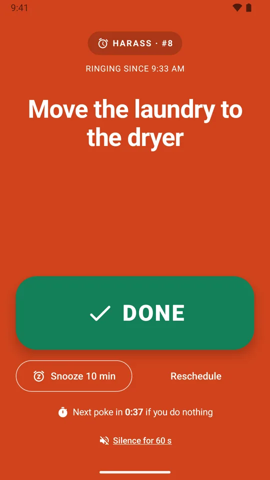
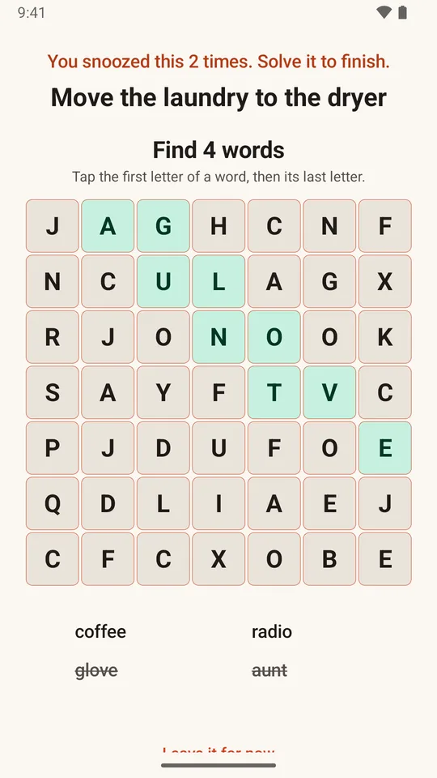
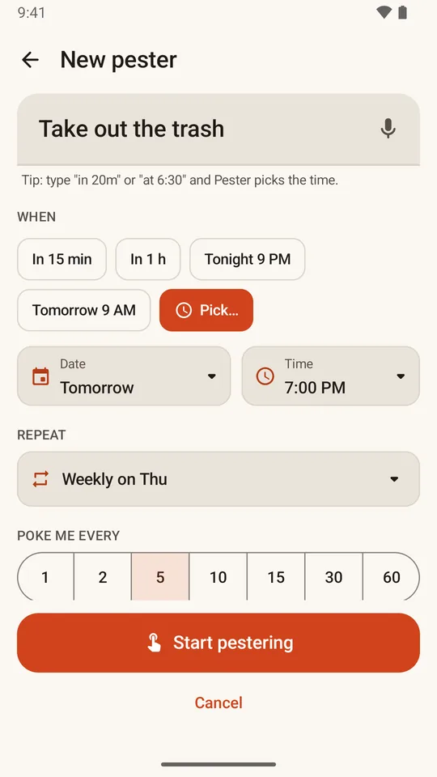
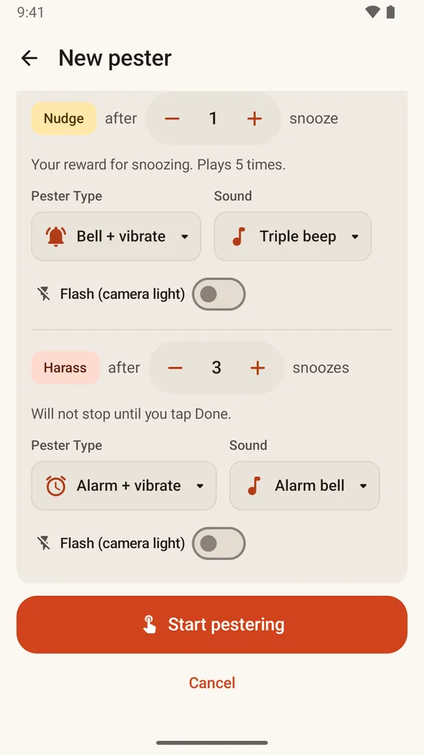
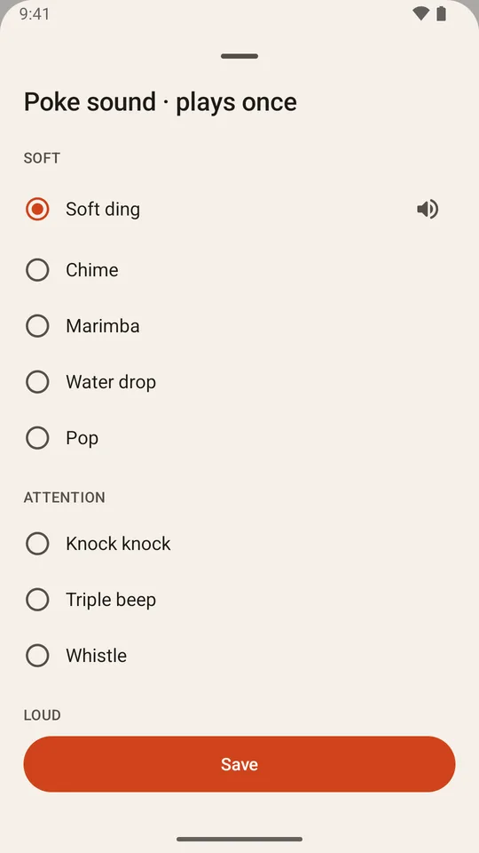
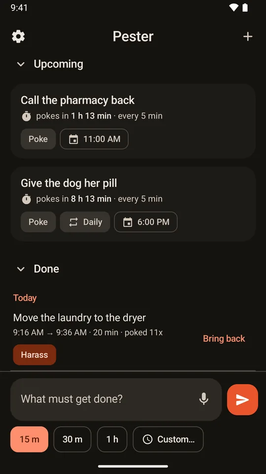
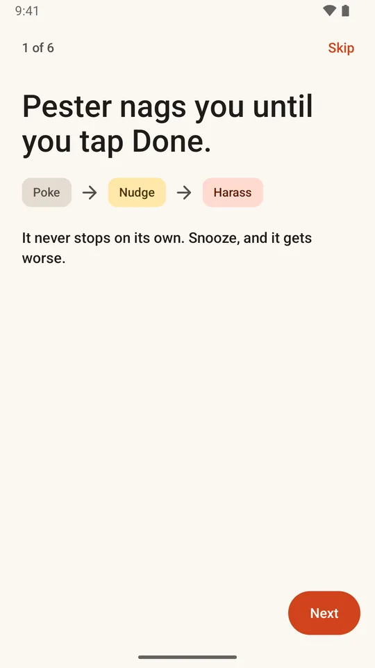
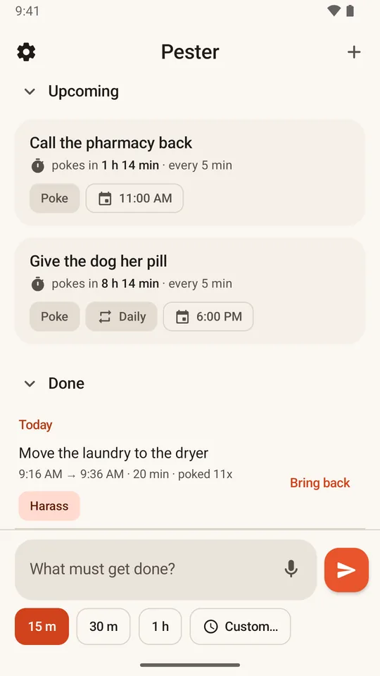

What it looks like
Real screens from Pester







A reminder that keeps coming back, and gets louder, until you tap Done.
Most reminders ring once and give up. Pester keeps coming back. Type what needs doing and pick a time. Pester pokes you, then pokes you again every few minutes until you tap Done. Ignore it and it gets louder. Snoozing is something you will start to reconsider.
For Android 8 or newer · Free for 3 reminders at a time · $4.99 once for unlimited · No ads, no subscription, no account

What it looks like







Features
Most reminders expect you to act the first time. Pester expects you to swipe it away, get busy and forget. So it comes back.
Three steps, and each one fills the screen, even when the phone is locked. Poke: your reminder and a short sound, once. Nudge: your reward for ignoring it, the sound plays 5 times. Harass: a full alarm that keeps coming back until you tap Done. Prefer something quieter for a step? Pick it in Settings. You pick how many snoozes come before Nudge and before Harass. Each alarm rings for up to about 3 minutes, then waits for the next poke. It never stops on its own.
Snoozing is something you will start to reconsider. Every poke you ignore counts as a snooze. So does tapping Snooze. Then Pester wants something before you tap Done. Snoozed once: a simple sum. Twice: a word search. Three times or more: type ten real words of 7 letters or more. The noise keeps going while you solve it. Get it wrong 5 times and Pester lets you off, and it still counts as Done. You can turn Punishments off in Settings, if you must.
Type the task in the box at the bottom of the screen, or tap the microphone and say it. Tap 15 m, 30 m, 1 h or Custom, and send. Or type "call the vet at 6:30" and Pester sets the time for you.
The + button opens the full page: the date, the time, how often it pokes you, and whether it repeats: every day, on weekdays, on the days you pick, every month, or every few days. You can also choose how pushy this one reminder gets. Changed your mind later? Tap the reminder, then Edit, and change any of it.
12 sounds built in, from a soft ding to a siren. Or use your phone's own ringtones, a sound file, or record your own. For each step you pick the sound and how it reaches you: a sound, sound and vibrate, a full-screen alarm, or vibrate only. You can add a flash of the camera light. Flashing light can trigger seizures in some people with epilepsy, so Pester warns you when you turn it on.
Snooze for 10 minutes, an hour, or until a time you pick, or move it to a later time. Pester counts every snooze. Done and Snooze are right on the message and on the alarm screen, so you never have to open the app in a hurry. Forget it removes the reminder, no hard feelings.
Pick the hours you sleep. Pokes still come, but silently, and they do not count as snoozes. They will be waiting for you in the morning. Off unless you turn it on.
What is coming up sits on top. What you finished sits below, with how long it took and how many pokes it needed, and one tap brings it back. Light, Dark, or match your phone.
How it works
Type what needs doing in the box at the bottom, or tap the microphone and say it. Tap 15 m, 30 m, 1 h or Custom, and send. Want a date or a repeat? Tap + instead.
At the time you picked, Pester pokes you. Then again every few minutes. Ignore it and it gets louder: Poke, then Nudge, then Harass.
That is the only thing that ends it. On the list, swipe a reminder left when it is done, or right to push it back 15 minutes. Snooze if you honestly cannot do it right now. Just know that Pester counts every snooze.
A small box on your home screen that shows what is coming up · a Pester button in the panel you pull down from the top of the screen · a 6-page tour the first time you open Pester, which sets how it treats you and turns on what it needs to ring on time · back up your reminders to a .pes file and restore them later.
Pricing
No subscription, no ads, nothing to renew, no account. Use it free with up to 3 reminders at a time, and unlock unlimited whenever you like.
Up to 3 reminders at a time (a repeating one counts as one), every feature, for as long as you like.
As many reminders as you like. One payment on Google Play, yours for good on your Google account.
FAQ
Snooze it for 10 minutes, an hour, or until a time you pick, or move it to a later time. Snoozing pauses it. It does not end it, and with Punishments on, every snooze makes it harder to get rid of. Forget it removes the reminder, no hard feelings.
Snoozing is something you will start to reconsider. Every poke you ignore counts as a snooze, and so does tapping Snooze. Snooze once and Pester wants a simple sum before you can tap Done. Twice, a word search. Three times or more, you type ten real words of 7 letters or more, and pasting is switched off. The noise keeps going while you solve it, and "Leave it for now" closes the puzzle, not the noise. Get it wrong 5 times and Pester lets you off, and it still counts as Done. Tap Done on the first poke and there is nothing to solve. Silent pokes during quiet hours do not count, and a repeating reminder starts fresh each time. Punishments are on to start with. Turn them off in Settings and Done is one tap again.
Each alarm rings for up to about 3 minutes, then goes quiet and waits for the next poke a few minutes later. It never stops on its own: it keeps coming back until you tap Done.
Yes. When you choose a sound, tap Record and record up to 10 seconds. Android asks to use the microphone then, and only then. Say no and everything else still works. The recording stays on your phone. You can also use one of your phone's ringtones or a sound file. Sounds you record are not included in .pes backups, so on another phone those reminders use a built-in sound instead.
Turn on "Ring through Do Not Disturb" in Settings and Android will ask you to allow it. It is off to start with. If you just want quiet nights, use quiet hours instead: pokes keep coming, silently, and wait for you in the morning.
Because phones try hard to keep apps quiet, and Pester's whole job is to be heard on time. Each one is listed below with the reason. The tour the first time you open Pester turns them on one by one, and Settings shows which ones are on, with a Fix button for each. Pester cannot use the internet.
No. Pester cannot use the internet, so nothing you type or record leaves your phone. There is no account and no cloud. To move to a new phone, back up your reminders to a .pes file in Settings and restore it on the new one.
Permissions
Pester asks for each one when it needs it, and says why on screen first. The tour the first time you open Pester turns on the ones that keep it on time, and Settings shows which ones are on.
Pester is in a free 14-day test on Google Play before it opens to everyone. To join, first join the tester group, then sign up for the test on Google Play with the same Google account, install Pester and keep it for 14 days. Testers can unlock Pester Unlimited for free during the test.
Built by a mechanical engineer and dad who could not find a reminder that refused to give up. Free for 3 reminders at a time, every feature, no ads.